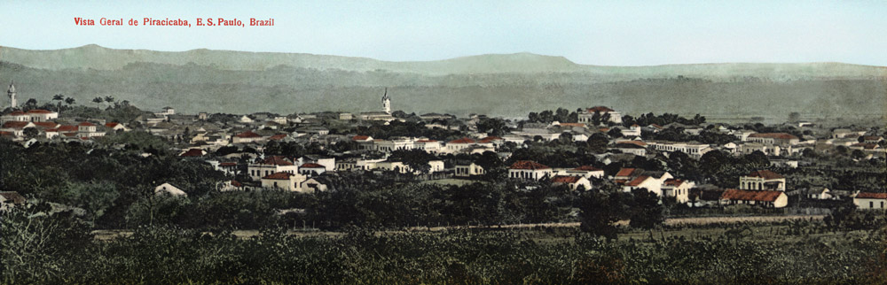

A Passagem da Cidade - Uma Piracicaba que poderia ter sido é um livro editado em estado-da-arte que registra e resgata lugares piracicabanos históricos entre os séculos 19/20 (praças, largos, bosques, teatro, cinemas, hotel) que não mais existem e lugares ainda vivos, mas inacessíveis à população.
Dividido em oito capítulos, o projeto tem como suporte iconográfico mais de uma centena de fotografias e cartões postais raros, do final do século 19 e início do século 20, e inclui inédito registro cronológico de editores de postais e fotógrafos atuantes em Piracicaba entre 1883 e cerca de 1930.
Dados Técnicos
Tamanho - 28 x 21 cm
Acabamento - Capa dura, impressão em papel couchê, quatro cores
136 páginas
ISBN 978-65-00-03452-3
PRÓLOGO
Happiness is a warm gun. Se felicidade pode ser um revólver quente, alucinada viagem poética de John Lennon, a arma fumegante mais usada pelos piracicabanos para justificar o progresso foi a demolição. Ainda na viagem, a madre superiora dispara o revólver: um estacionamento vertical em lugar de um hotel centenário? Um banco substituindo um cinema? (ou uma casa de jogos substituindo um cinema, ou igrejas pentecostais substituindo cinemas?). Um reles coreto onde havia um teatro? Um bosque (uma quase floresta!) destruída para receber um campo de futebol? Mais, um museu mutilando um jardim com a mais exuberante e adorável visão do rio?
Um, uma, um, uma, um, uma... Sim, John estava certo.
A felicidade é um revólver quente.
Um burgo fechado e insulado da vida cultural do país, que não possuía sequer estrada carroçável para a capital e um clima provavelmente insuportável para qualquer temperamento, por mais impetuoso que fosse, além da poeira das ruas de terra, da iluminação a querosene, que deixava a cidade em penumbra e um cheiro fedorento no ar, Constituição - nossa futura Pira – era, no entanto, um porto seguro para apostas arriscadas e atrevimentos que levavam quase sempre a um fim de vida melancólico para seus autores.
Atração fatal para os porretas, pero no mucho. Foi através de alguns destes idealistas que a vila se transformou em cidade.
De repente, uma ideia porr..., quero dizer, luminosa.
1878 André Sachs pediu à Câmara Municipal a concessão de “umas ilhas logo abaixo da ponte”, nas quais pretendia explorar uma área de lazer para “proporcionar um agradável passeio ao público desta cidade”. Pediu também uma autorização “para levantar um quiosque nas margens do Rio Piracicaba, entre este rio e a beirada que vai da dita ponte à fábrica de tecidos do Sr. Queiroz.”.
Levou.
O que trouxe e o que buscava Rudyard Kipling no Brasil?
Em primeiro lugar, bananas, mas também vitó..., alto lá, já sinto o leitor, estupefato, questionando-me. Bananas? Sim, bananas, se possível em grandes cachos, daqueles amarelos de doer, macias e suculentas (em Santos, na Serra do Mar), e também vitórias-régias (no Rio, no Jardim Botânico), cobras de rabos sibilantes (em São Paulo, Butantã), café de verdade (os que ele conhecia eram pura beberagem), estradas de ferro (pela São Paulo Railway, of course, com parada e olhos curiosos em Paranapiacaba) e, finalmente, como produzir e transmitir energia elétrica, primeiro do pé de uma serra (em Cubatão) até uma verdadeira metrópole, São Paulo, muitos pés acima, e depois, aqui em Piracicaba, onde terminou seu périplo brasileiro de 30 dias.
Entretanto, a bem da verdade, registre-se que, pelo lado do papar, bocas não faltaram para todo este leite abundante, esguichado da profusão de herdeiros diretos de Luiz Antonio, o Brigadeiro. De seus seis filhos, Francisca Miquelina (1º) lhe deu duas netas, Ilídia Mafalda (2º) deu mais onze, Francisco Antonio (3º) mais doze, Luiz Antonio (4º) gerou inacreditáveis nove com a primeira esposa e depois mais dez com a segunda, Vicente (5º) mais quinze e enfim, anticlímax, a derradeira Maria Innocencia (6º), justificando o nome, morreu sem herdeiros.
Resumo: um total de cinquenta e nove netos, alguns de casamentos que fugiam à tradição atual.
Primos com primos, tio com sobrinha, um samba do espermatozoide doido comum na época e que possivelmente deu ao mundo mais outro tanto de bisnetos, trinetos e vamos parar por aqui.
O Santo Estevam virou a Geni predileta da combativa e crítica mídia da época.
Dia sim, dia não, os jornais jogavam a bosta: pardieiro, ruína exótica, telheiro imundo, antediluviano, montão de barro cozido, casarão de morcegos e pulgas, galinheiro do jardim e por aí vai.
Apesar desses percalços, alguns programas de prestidigitação, hipnose, ventriloquismo e outras charlatanices, além de encenações propriamente ditas, continuavam a se apresentar e consta até que na noite de 14 de maio de 1888, embandeirado e cheio de flores, a abolição foi festejada no TSE.
A coisa toda começou com o tenente-coronel Theobaldo da Fonseca e Souza (1760 - 1829) que deu à Câmara Municipal um trabalho do cão quando da demarcação do rossio – a praça central – e da fixação dos próprios limites da cidade, de suas quadras e da legalização de terrenos. Um misto de latifundiário e grileiro, Theobaldo tanto lutou pelo que achava que lhe cabia e tinha direito – não tem dono? Então é meu. - que foi um dos fundadores do Partido dos Quarenta Coligados, um ajuntamento de pretendentes ao domínio de áreas valiosas da cidade, as terras patrimoniais, ainda quando alguns espaços eram divididos por cercas precárias e escrituras de venda e compra, ou doações, caminhavam por lentos trâmites burocráticos. Em clima de combate e rasteiras aconteceram brigas, insultos e acusações mútuas entre os poderosos e até assassinatos foram encomendados!
Caros, quero apresentar-lhes sem rodeios e de bate-pronto uma figuraça a julgar pelo impagável pseudônimo: Pafúncio Semicúpio Pechincha. Ele não pertenceu à história da cidade, ao menos como participante local e ativo, porém abro este bloco com ele por ter sido, como editor de livros, um dos primeiros registradores da cena cotidiana brasileira.
Eduardo Laemmert (1806 - 1880), o Pafúncio, publicou junto com o irmão Henrique o célebre Almanaque Laemmert, também conhecido como “Almanaque administrativo, mercantil e industrial da Corte e Província do Rio de Janeiro”, uma espécie de guia anual para consulta de quem era quem na sociedade, no comércio e no que mais havia onde o bedelho pudesse se meter, como convém a um almanaque.
Aguardadas ansiosamente em cada passagem de ano, as folhinhas Laemmert foram uma espécie de Wikipedia nos antanhos do século 19.
Francisco Ferreira (Piracicaba - SP, 1954) atuou em diversos campos da cultura: música, teatro, carnaval, artes plásticas.
Designer por formação (Mackenzie,1978), marketing como profissão, foi do teatro (onde dirigiu A Metamorfose, de Kafka, em 1970) à música (como baterista nos 70 e depois produtor); das artes plásticas ao carnaval (como autor dos enredos na época de ouro da Zoon Zoon).
Na literatura, estreou em 2005 com Noites de Pira – O Sonho da Boemia Piracicabana nos anos 1960-1970.
"A Passagem da Cidade" é sua segunda publicação.